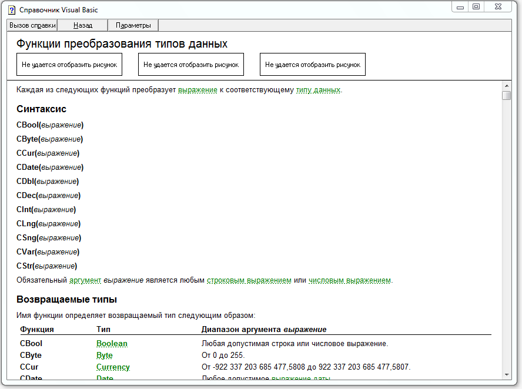

Хелп Access 97. Самый лучший, к тому же
русскоязычный. Для полноценного изучения конечно не подойдет, но для
справок лучше не сделано. Несмотря на то, что прошло 20 лет, он во
многом еще актуален.
Этот - старый файл HLP не запуститься под последними версиями Windows -
нужно будет драйверочек (адаптер) небольшой от MS установить.
Найти его можно где то тут:
https://www.microsoft.com/ru-ru/download/details.aspx%3Fid%3D91
-----------------------------------------------------------------
Для справки:
Запускать (делать ярлык) - рекомендую на файл: acmain80.hlp


(5 592 kB) Полезное